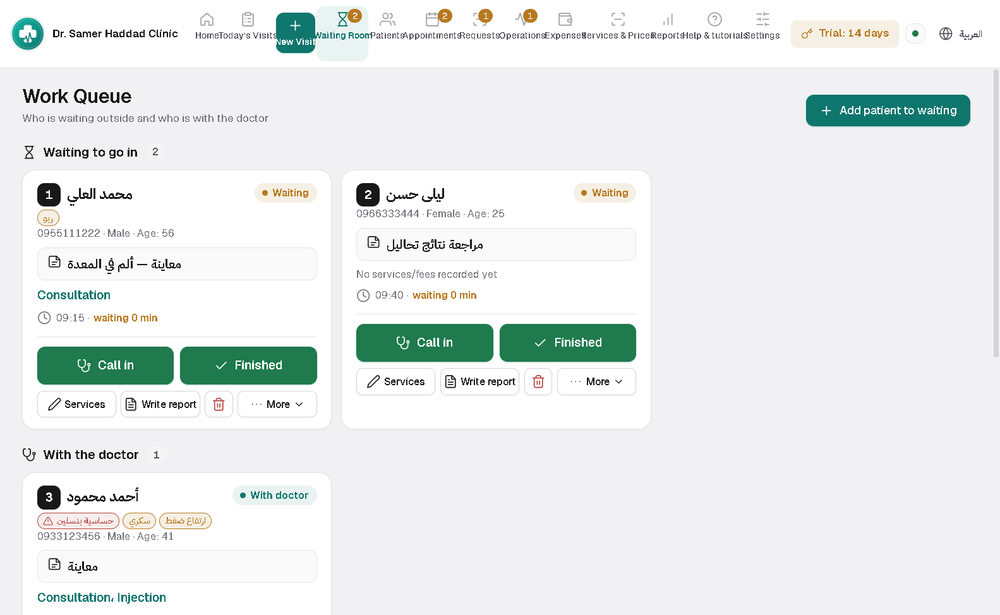
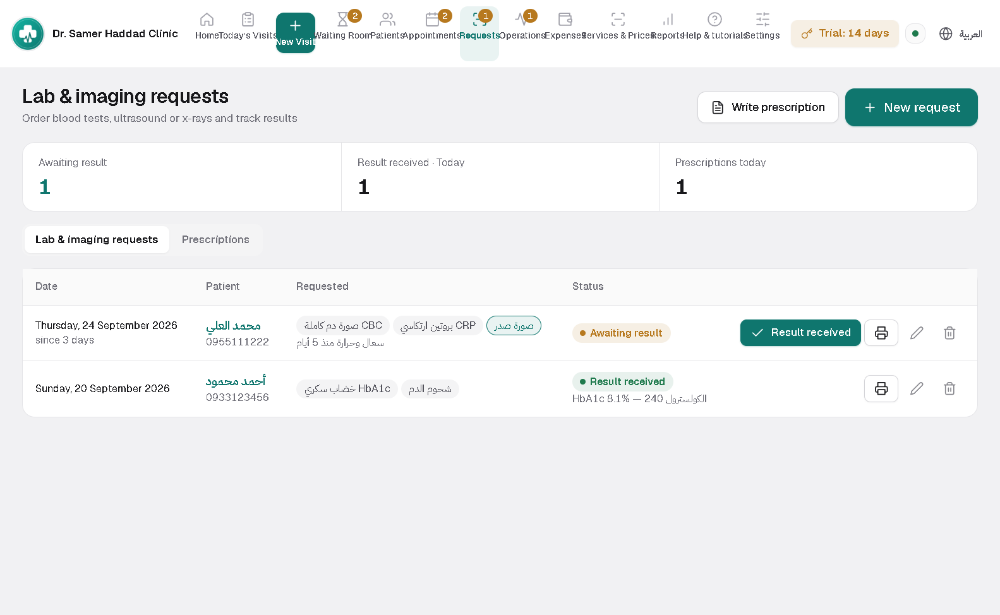
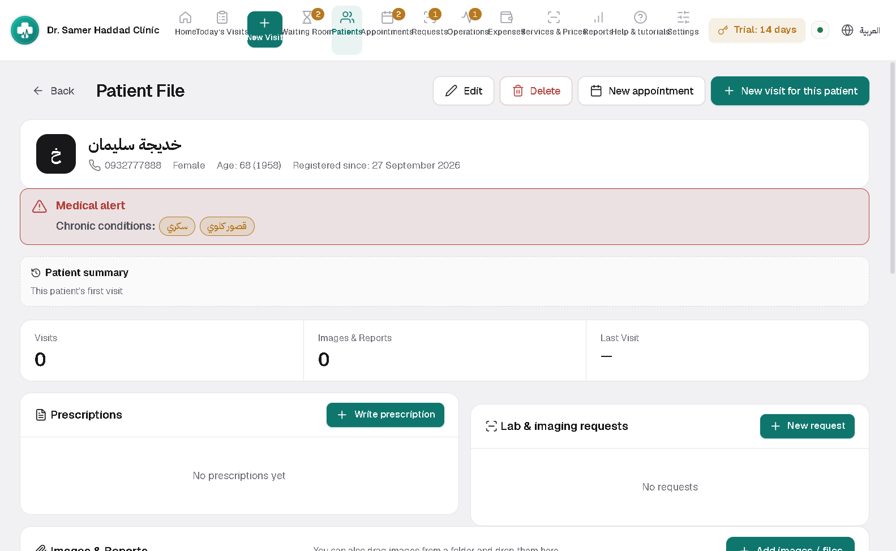

Clinic Desk
For internal medicine, paediatrics, dermatology, orthopaedics, neurology, eye, ENT and more: a waiting room, prescriptions and lab and imaging requests, vital signs and allergy alerts.
Your PC code is inside the app: Settings, then Software licence. Send it with the request and the activation code comes back to you.
Inside the program




What it does
Set up for your specialty
Pick your specialty and it fills in the matching services, drugs, lab tests and vital signs, which you can then edit.
Prescriptions that check allergies
Write prescriptions from your drug list with doses, and it warns you when a drug clashes with an allergy on file.
Lab and imaging requests
Order a test or scan from the visit, print the request, and track pending results until they arrive.
Vital signs and alerts
Blood pressure, pulse, temperature and weight on every visit, and a red strip atop the file for allergies and chronic conditions.
Waiting room and appointments
Who arrived, who is with the doctor, who is done, plus recurring appointments.
Printing with a preview first
Every sheet is previewed before it prints, on your letterhead in the font and size you choose. Plus an optional medicine store if you dispense.
Installing takes two minutes
No technical experience needed. Download the file, run it, open the program.
Download the file
Press the download button on the product page. The file lands in your Downloads folder.
Run the installer
Double-click it. If Windows shows a warning, choose "More info" then "Run anyway".
Open the program
It asks for your clinic name, doctor name and logo, and it is ready to use.


Not sure which one fits?
Send a message with your specialty and I will reply personally.